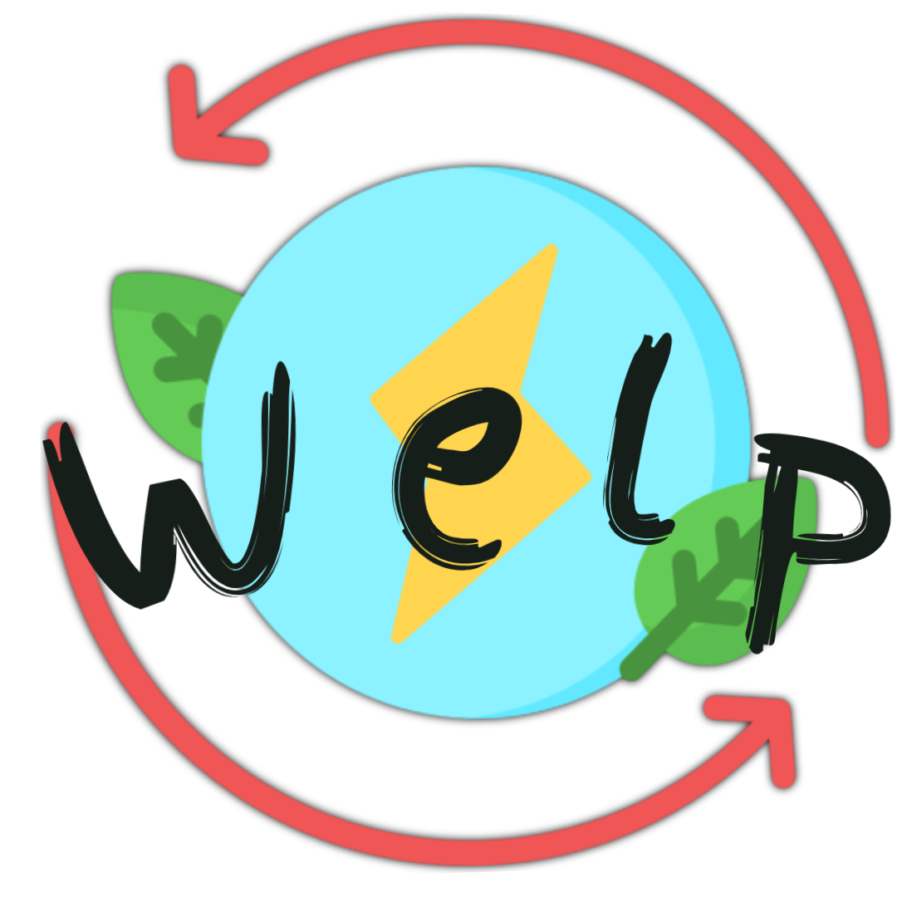

<nav class="navbar navbar-expand-lg navbar-dark " style="background-color: #FCE712;">
    <a class="navbar-brand" href="#" style="font-family: 'Poppins', sans-serif;" style="color:black;">
         {{title}}</a>
    <button class="navbar-toggler " type="button " data-toggle="collapse " data-target="#navbarNav " aria-controls="navbarNav " aria-expanded="false " aria-label="Toggle navigation ">
    <span class="navbar-toggler-icon "></span>
  </button>
    <div class="collapse navbar-collapse " id="navbarNav ">
        <ul class="nav navbar navbar-nav navbar-brand" *ngIf="identity">
            <li class="nav-item ">
                <a class="nav-link " [routerLink]="['/home']" [routerLinkActive]="['active']" style="color:black;"><span class="fas fa-home"aria-hidden="true"></span> Inicio</a>
            </li>
            <li class="nav-item  ">
                <a class="nav-link " [routerLink]="['/timeline']" [routerLinkActive]="['active']" style="color:black;"><span class="fas fa-list "aria-hidden="true"></span> Timeline </a>
            </li>
            <li class="nav-item ">
                <a class="nav-link " [routerLink]="['/gente']" [routerLinkActive]="['active']" style="color:black;"><span class="fas fa-users"aria-hidden="true"></span> Gente </a>
            </li>
        </ul>

        <ul class="nav navbar navbar-nav navbar-brand ml-auto" *ngIf="!identity">
            <li>
                <a class="nav-link " [routerLink]="['/login']" [routerLinkActive]="['active']" style="color:black;"> <span class="fas fa-sign-in-alt " aria-hidden="true" style="color:black;"></span> Login </a>
            </li>
            <li>
                <a class="nav-link " [routerLink]="['/registro']" [routerLinkActive]="['active']" style="color:black;"> <span class="fas fa-user " aria-hidden="true" style="color:black;"></span> Registro </a>
            </li>
        </ul>

        <ul class="nav navbar-nav navbar-right ml-auto" *ngIf="identity">
            <li class="avatar">
                <!-- Cargar foto de perfil del usuario -->
                
            </li>

            <li class="nav-item dropdown">
                <a class="nav-link dropdown-toggle" data-toggle="dropdown" aria-haspopup="true" aria-expanded="false" href="#" style="color:black;">
                            {{identity.name}} <span class="caret"></span>
                </a>
                <ul class="dropdown-menu" aria-labelledby="dropdownMenuButton">
                    <li>
                        <a class="dropdown-item" [routerLink]="['/perfil',identity._id]">
                            <span class="fas fa-user"></span> Mi perfil
                        </a>
                    </li>

                    <li>
                        <a class="dropdown-item" [routerLink]="['/mis-datos']">
                            <span class="fas fa-cogs"></span> Mis Datos
                        </a>
                    </li>

                    <li>
                        <a class="dropdown-item" (click)="logout()" href="">
                            <span class="fas fa-sign-out-alt"></span> Cerrar sesion
                        </a>
                    </li>
                </ul>
            </li>
        </ul>

    </div>
</nav>

<router-outlet></router-outlet>